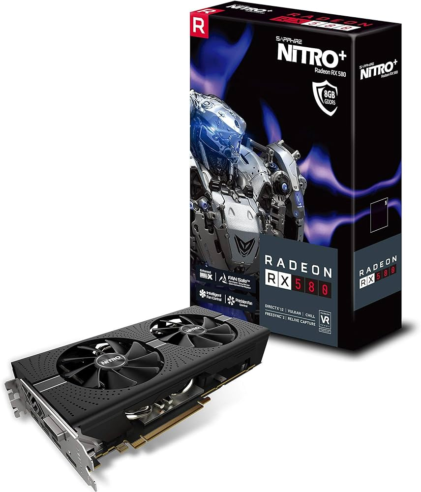

ระบบคอมพิวเตอร์ หมายถึงองค์ประกอบหลักที่จะทำให้เครื่องคอมพิวเตอร์สามารถทำงานได้อย่างสมบูรณ์ ถ้าขาดองค์ประกอบส่วนใดส่วนหนึ่ง คอมพิวเตอร์ไม่สามารถที่จะทำงานได้ ระบบของคอมพิวเตอร์นี้ประกอบด้วย 4 ส่วน คือ
1) ฮาร์ดแวร์ (Hardware) อุปกรณ์และชิ้นส่วนของคอมพิวเตอร์
2) ซอฟต์แวร์ (Software) โปรแกรมหรือชุดคำสั่ง
3) บุคลากร (People ware) บุคลากรในงานด้านคอมพิวเตอร์
4) ข้อมูล (Data)
หมายถึงอุปกรณ์ต่างๆ ที่ประกอบขึ้นเป็นเครื่องคอมพิวเตอร์ มีลักษณะเป็นโครงร่างสามารถมองเห็นด้วยตาและสัมผัสได้เช่น จอภาพ คีย์บอร์ด
เครื่องพิมพ์ เมาส์ เป็นต้น ซึ่งสามารถแบ่งออกเป็นส่วนต่างๆ ตามลักษณะการทำงาน
ได้ 4 หน่วย คือหน่วยรับข้อมูล (Input Unit) หน่วยประมวลผลกลาง หรือ CPU
(Central Processing Unit) หน่วยแสดงผล (Output Unit) หน่วยความจำ (Memory Unit) ซึ่งรวมไปถึงหน่วยเก็บข้อมูลสำรอง (Secondary Storage) โดยอุปกรณ์แต่ละหน่วยมีหน้าที่การทำงานแตกต่างกัน
แผงวงจรหลัก (Main Board) เป็นแผงวงจรขนาดใหญ่ที่สุดในเครื่องทำหน้าที่เชื่อมต่ออุปกรณ์ต่างๆ
เช่น หน่วยประมวลผลกลางหรือ CPU RAM การ์ดเสียง การ์ดจอภาพและอื่นๆ เข้าด้วยกัน
แผงวงจรหลักจะมีช่องเสียบอุปกรณ์เรียกว่าสล็อต (Slot) และช่องเชื่อมต่อกับอุปกรณ์อื่นๆ เรียกว่าพอร์ต (Port) ดังนั้นควรเลือกแผงวงจรหลักที่สามารถประสานการทำงานร่วมกับอุปกรณ์และ
รองรับอุปกรณ์ที่สนับสนุนกับ
เทคโนโลยีใหม่ในอนาคตได้ ซึ่งส่วนประกอบต่างๆ ที่สำคัญของแผงวงจรหลัก มีดังนี้
1) ชิปเซ็ต (Chipset)
2) CPU socket
3) สล็อตสำหรับติดตั้ง RAM
หน่วยรับข้อมูล (Input unit) เป็นหน่วยที่รับสัญญาณเข้ามาจากอุปกรณ์รับข้อมูลเข้า แล้วแปลงให้เป็นสัญญาณที่เหมาะสมเพื่อส่งให้หน่วยประมวลผลกลางทำการ
ประมวลผล อุปกรณ์รับข้อมูลที่ใช้กันส่วนใหญ่ ได้แก่แป้นพิมพ์ (Keyboard) และเมาส์ (Mouse) นอกจากนี้ยังมีอุปกรณ์รับข้อมูลเข้าอื่นๆ ดังนี้
1.1.2.1 แป้นพิมพ์ (Keyboard)
1.1.2.2 เมาส์ (Mouse)
1.1.2.3 Track ball, Track point และTouch pad
1.1.2.4 Joystick
1.1.2.5 จอภาพระบบสัมผัส (Touch Screen)
1.1.2.6 อุปกรณ์กวาดข้อมูล
1.1.2.7 กล้องถ่ายภาพดิจิตอล หรือ Digital Camera
1.1.2.8 กล้องวีดีโอดิจิตอล หรือ Digital Video Camera
1.1.3 หน่วยประมวลผลกลาง (CPU)
หน่วยประมวลผลกลางหรือ CPU ย่อมาจาก Central Processing Unit เป็นอุปกรณ์ที่มีความสำคัญเสมือนสมองของคอมพิวเตอร์ มีหน้าที่หลักในการประมวลผลข้อมูล โดยรับข้อมูลจากผู้ใช้ผ่านอุปกรณ์ต่างๆ เช่น เมาส์ และคีย์บอร์ด จากนั้นจึงทำการประมวลผลและส่งผลลัพธ์ออกมาทางอุปกรณ์แสดงผล เช่นทางจอภาพ ลำโพง หรือเครื่องพิมพ์ หน่วยประมวลผลกลางประกอบด้วยส่วนประสำคัญ 3 ส่วน คือ
1) หน่วยคำนวณและตรรกะ หรือ ALU
(Arithmetic & Logical Unit) ทำหน้าที่เกี่ยวข้องกับการคำนวณทางคณิตศาสตร์ เช่น บวก ลบ คูณ หาร นอกจากนี้ยังสามารถเปรียบเทียบตามเงื่อนไข เพื่อให้ได้คำตอบตามเงื่อนไข เช่นเปรียบเทียบมากว่า น้อยกว่า เท่ากัน ไม่เท่ากันของจำนวน 2 จำนวน เป็นต้น
2) หน่วยควบคุม หรือ CU
(Control Unit) ทำหน้าที่ควบคุมลำดับขั้นตอนการการประมวลผลและการทำงานของอุปกรณ์ต่างๆ ภายในหน่วยประมวลผลกลางและรวมไปถึงการประสานงานในการทำงาน
ร่วมกันระหว่างหน่วยประมวลผลกลางกับอุปกรณ์นำเข้าข้อมูล อุปกรณ์แสดงผล และหน่วยความจำสำรองด้วย
3) หน่วยความจำ
Cache เป็นระบบหน่วยความจำความเร็วสูงที่เก็บข้อมูลบางส่วนของ
Main Memory ในทางกายภาพแล้ว Cache จะอยู่ตรงกลางระหว่าง Main Memory กับหน่วยประมวลผลกลาง เพราะว่า Cache มีความเร็วสูงกว่า Main Memory ทำให้เป็นการเพิ่มประสิทธิภาพในการทำงานของระบบ เพราะถ้าไม่มีหน่วยความจำ Cache แล้ว หน่วยประมวลผลกลางจะเสียเวลาในการหยุดรอข้อมูลจาก
RAM ซึ่งทำงานช้ากว่า Cache มาก
1.1.4 หน่วยความจำ
เพื่อใช้ในการประมวลผลของคอมพิวเตอร์ หรือใช้เก็บข้อมูลเพื่อใช้งานภายหลัง แบ่งออกเป็นประเภทต่างๆ ดังนี้
1.1.4.1 หน่วยความจำภายใน เป็นหน่วยความจำที่ติดตั้งอยู่บนแผงวงจรหลักในเครื่องคอมพิวเตอร์ ทั้งแบบที่ติดอยู่กับแผงวงจรหลักและแบบถอดประกอบได้ ประกอบด้วย
1.1.4.2 หน่วยความจำสำรอง HHD
(Hard Disk Drive) หมายถึงหน่วยความจำที่ใช้เก็บบันทึกข้อมูลเอาไว้อย่างถาวร เพื่อใช้งานภายหลัง นำส่ง หรือแลกเปลี่ยนข้อมูลกับผู้อื่น ซึ่งสามารถแก้ไขเปลี่ยนแปลงข้อมูลที่เก็บได้ตลอดเวลา ได้แก่เทปแม่เหล็ก จานแม่เหล็ก และแผ่นจานแสง
ทำหน้าที่นำผลจากการประมวลผลมาแปลงเป็นสัญญาณ เหมาะสมเพื่อใช้แสดงผล
แก่ผู้ใช้ทางอุปกรณ์แสดงผล โดยมีอุปกรณ์ต่างๆ ดังนี้
1.1.5.1 จอแสดงผล
จอแสดงผล หรือ Monitor ทำหน้าที่รับข้อมูลที่ส่งมาจากหน่วยประมวลผล กลางเพื่อ
นำมาแสดงบนจอภาพให้ผู้ใช้เห็นและทำงานได้ มีรูปแบบและการทำงานที่ต่างกัน ดังนี้
1.1.5.2 เครื่องพิมพ์ (Printer)
เครื่องพิมพ์เป็นอุปกรณ์ที่ทำหน้าที่แสดงผลที่ได้จากการประมวลผลของ
เครื่องคอมพิวเตอร์ให้อยู่ในรูปของอักษร หรือรูปภาพที่จะไปปรากฏอยู่บนกระดาษ
โดยเครื่องพิมพ์แบ่งออกเป็น 4 ประเภท ดังนี้
1.1.5.3 การ์ดแสดงผล
การ์ดแสดงผล หรือ
Graphic Card หรือ Display Card หรือ VGA Card เป็นอุปกรณ์ที่
ใช้แปลงสัญญาณทางดิจิตอลให้เปลี่ยนเป็นสัญญาณภาพที่ใช้แสดงผลบนจอคอมพิวเตอร์
ชนิดของการ์ดแสดงผลจะเป็นตัวกำหนดความเร็วในการแสดงผล ความละเอียด
และความคมชัด ของกราฟฟิก รวมทั้งจำนวนสีที่สามารถแสดงผลด้วย

1.1.5.4 การ์ดเสียง
การ์ดเสียง หรือ
Sound Card เป็นอุปกรณ์ที่ใช้แปลงสัญญาณจากการประมวลผล เพื่อส่งให้อุปกรณ์แสดงผลประเภทเสียง เช่นลำโพง ขับเป็นเสียงออกมา

หมายถึงโปรแกรมหรือชุดคำสั่งที่เขียนขึ้นเพื่อให้เครื่องคอมพิวเตอร์ปฏิบัติตาม แบ่งออกเป็น 2 ประเภทคือ
1.2.1 ซอฟแวร์ระบบ
(System Software) หมายถึงโปรแกรมหรือชุดคำสั่งที่ควบคุมการทำงานของคอมพิวเตอร์ เป็นสื่อกลางที่ประสานการทำงานระหว่างโปรแกรมประยุกต์กับเครื่องคอมพิวเตอร์ เพื่อช่วยในการจัดการทรัพยากรของคอมพิวเตอร์ ได้แก่ระบบปฏิบัติการ เช่น DOS, Windows, MAC และUNIX
1) โปรแกรมสำเร็จรูป
(Package Program) เป็นโปรแกรมหรือชุดคำสั่งที่เขียนหือพัฒนาขึ้นมาโดยบริษัท หน่วยงาน ที่มีวางขายตามท้องตลาดทั่วไป เช่น MS-Office 2013, Adobe CS6 หรือ Kaspersky Anti-virus เป็นต้น
2) โปรแกรมเฉพาะงาน (User Program) เป็นโปรแกรมหรือชุดคำสั่งที่เขียนหรือพัฒนาขึ้นโดยผู้ใช้ เพื่อสนองการใช้งานเฉพาะอย่าง เช่นโปรแกรมระบบเงินเดือน โปรแกรมระบบงานพัสดุ เป็นต้น
เขียนขึ้นมาเพื่อให้เครื่องคอมพิวเตอร์ทำงานตามที่ผู้ใช้ต้องการ ซึ่งจะต้องทำงานอยู่บน
ระบบปฏิบัติการอีกทีหนึ่ง เช่นโปรแกรมสำเร็จรูปต่างๆ แบ่งออกเป็น 2 ประเภท คือ
ิิิิิิ
หมายถึงบุคคลที่เกี่ยวข้องคอมพิวเตอร์ด้านต่างๆ ที่มีความรู้เกี่ยวกับคอมพิวเตอร์ สามารถใช้งาน สั่งงานเพื่อให้คอมพิวเตอร์ทำงานตามที่ต้องการ People Ware ประกอบด้วยบุคคลต่างๆ ดังนี้
1.3.1 ผู้จัดการระบบ
(System Manager) เป็นผู้วางนโยบายการใช้คอมพิวเตอร์ให้เป็นไปตามเป้าหมายของหน่วยงาน
1.3.2 นักวิเคราะห์ระบบ
(System Analyst) เป็นผู้ที่ศึกษาระบบงานเดิมหรืองานใหม่ ความเป็นไปได้ในการใช้คอมพิวเตอร์กับระบบงาน เพื่อให้โปรแกรมเมอร์เป็นผู้ที่เขียนโปรแกรมให้กับระบบงานนั้นๆ
1.3.3 โปรแกรมเมอร์
(Programmer) เป็นผู้เขียนโปรแกรมสั่งงานเครื่องคอมพิวเตอร์เพื่อให้ทำงานตามความต้องการของผู้ใช้ ตามแผนผังหรือรูปแบบที่นักวิเคราะห์ระบบได้ออกแบบไว้
1.3.4 ผู้ใช้
(User) เป็นผู้ใช้งานคอมพิวเตอร์ทั่วไป ที่ต้องเรียนรู้วิธีการใช้เครื่องและวิธีการใช้งานโปรแกรม เพื่อให้โปรแกรมที่มีอยู่สามารถทำงานได้ตามที่ต้องการ
เป็นองค์ประกอบที่สำคัญอย่างหนึ่งในระบบคอมพิวเตอร์ เป็นสิ่งที่ต้องป้อนเข้าไปในคอมพิวเตอร์พร้อมกับโปรแกรม เพื่อผลิตผลลัพธ์ที่ต้องการออกมา ข้อมูลที่สามารถนำมาใช้กับคอมพิวเตอร์ได้ประกอบด้วยข้อมูลตัวเลข (Numeric Data) ข้อมูลตัวอักษร (Text Data) ข้อมูลเสียง (Audio Data) ข้อมูลภาพ (Images Data) และข้อมูลภาพเคลื่อนไหว (Video Data)
2. ประเภทของคอมพิวเตอร์
เทคโนโลยีทางด้านคอมพิวเตอร์มีการพัฒนาเปลี่ยนแปลงไปอย่างรวดเร็วตามความ
ความก้าวหน้าทางด้านอิเล็กทรอนิกส์ ทำให้ปัจจุบันมีเครื่องคอมพิวเตอร์ให้เลือกใช้
มากมายหลายรูปแบบตามความต้องการของผู้ใช้ การแบ่งประเภทของคอมพิวเตอร์
นั้นสามารถจำแนกตามหลักการประมวลผลและความสามารถของระบบได้ดังนี้
2.1 ประเภทของคอมพิวเตอร์ตามหลักการประมวลผล เป็นการแบ่งประเภทคอมพิวเตอร์ตามสัญญาณข้อมูลที่ใช้ในการประมวลผล ได้แก่
2.2 ประเภทของคอมพิวเตอร์ตามความสามารถของระบบ โดยพิจารณาจากความสามารถในการเก็บข้อมูลและความเร็วในการประมวลผล
เป็นหลัก ดังนี้